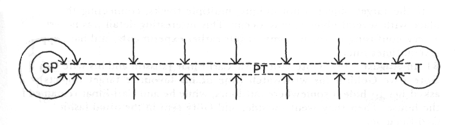
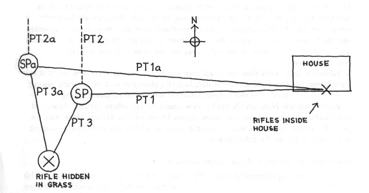
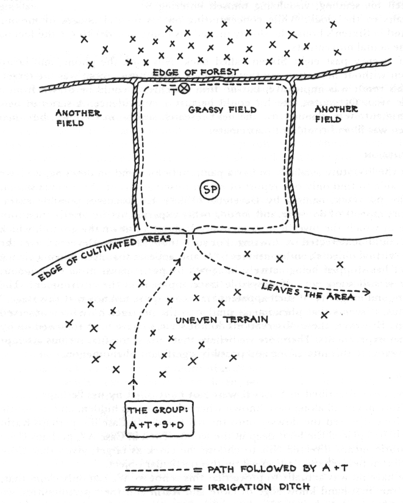

Dowsing along the psi track
- A Novel Procedure For Studying Unusual Perception
January 1994
by Nils O. Jacobson and Jens A. Tellefsen,
We are pleased herewith to publish the winning entry for the Imich Project Prize. -Editor
ABSTRACT
When a person concentrates vividly on a physical object in his surroundings, we have found that a 'psi track' seems to be established to the object. This track can be detected by dowsing. A procedure is described to explore and utilise this phenomenon.
BACKGROUND
Mr. Arthur Andersson, living in the village of Svanskog in the province of Värmland in Sweden, is locally well known as a dowser. He is now in his old age, but earlier was often employed to find water. His son, Göte Andersson, born in 1945, has not himself succeeded in dowsing, but has nevertheless been fascinated by the phenomenon for a long time.
In 1987, Göte read in some book that the human aura could be detected by dowsing, and he asked his father to try to detect this phenomenon around himself. Arthur walked towards Göte with his dowsing rod, and obtained a reaction at a distance of about half a metre. Göte then tried to expand his aura by mentally concentrating on it, but Arthur's reaction remained the same.
Göte then had the idea of trying to project his aura forwards, away from his body, and concentrated on a chair which was four metres in front of him, visualising that he was holding onto the chair with his hands. He asked Arthur to walk around it with his dowsing rod. Arthur, who thought the whole thing was crazy, nevertheless agreed to try the experiment. To his amazement, he got a strong deflection of his rod above the chair. Even stranger, a 'track' of deflection could be followed in the space between Göte and the chair. Göte and his father were both most surprised at this finding.
After this, Göte started to make new experiments with different friends who were all experienced in dowsing. He found that the phenomenon repeated itself and seemed to follow certain basic laws. During the next few years, Göte made hundreds of experiments with all the available dowsers who were willing to help him. He made an effort to perform the trials under controlled conditions, and in some experiments he even used neutral witnesses. Along the way, he tried to interest a professional parapsychologist in his discovery, but without success.
Some friends of Göte's had seen one of the authors (JAT) in a television programme, and he also knew about the writings of the other author (NOJ). Encouraged by his friends, Göte contacted Jens in January 1989, and later Nils. After a long period of correspondence and discussion, plans were made for more formal research. We were all three living in different parts of Sweden and have full-time jobs, so the work in Värmland has had to be concentrated to several intensive weekends.
Jens and his wife Kristina (who is herself an experienced dowser) visited Värmland in June and September of 1991, making several experiments, while Nils was present in two new series, performed in July and October of 1992. (A further series, done in August 1993, is briefly described in the Addendum.)
Göte has called the phenomenon discovered by him the 'psi track'. We have retained this as a working term, even though the paranormal nature of the phenomenon is not yet definitely proved.
We shall first describe the details of two basic experiments, and then discuss some further explorations of the psi-track phenomenon.
BASIC RESEARCH CONDITIONS
Single-Blind Condition
It is difficult to perform these experiments indoors, since electric wires and water pipes, among other things, will cause disturbances. A quiet place outdoors is to be preferred, with a rather large open central area. This should be checked beforehand by dowsing for water veins, electric cables and other possibly disturbing structures.The ' sender' (S ) chooses a spot as the 'sending place', and then selects a target within a reasonable distance from the sending place. Any easily visible object may be used as a target. S will tell nobody about his choice of target.
Standing in the sending place, S makes a strong mental concentration on the target object. S may use whatever visualisation or other mental technique he likes. This is called the 'sending'.
The sending place is well marked with a suitable object, and S may now leave the sending spot. The dowser (D) will then slowly walk with his dowsing rod in a small circle around the sending place. D may use whatever dowsing tool he is accustomed to, i.e. the forked twig or the angled rods.
When D gets the usual reaction from his rod, the spot is clearly marked. D will then walk around the sending place in successively larger circles, and in this way establish a more or less linear track on the ground. After a while, D stops walking in circles, and instead repeatedly crosses the track from the opposite side, at various points.
The track will be found to have a certain width. Depending on the method and sensitivity of D, the width varies from 0.5 to 1.5 metres. When dowsing in the space behind the target (as seen from the sending place), D will not get any reaction at all. Thus, the track ends at the target (except for a small distance around the target, corresponding to the 'aura' of the chosen object). In a successful trial, the middle of the track will point straight to the target. (See Figure 1.)
Of course, results obtained in this form of single-blind condition cannot be judged as conclusive. This condition is mainly used in exploratory trials and for training new dowsers.
In a more controlled variation of the single-blind condition, S will leave the experimental area as soon as the sending has finished, and remain out of sight from the sending place. Only then may D enter the area. D, in this case, will work alone, or with a separate witness who does not know what the target is.

Figure 1. Principal view of the basic experiment. SP = Sending Place. PT = Psi Track. T = Target. The arrows show the direction of the dowser moving towards the track from opposite sides.
Double-Blind Condition
For this more controlled condition, an assistant (A ) is needed. The general area to be used, the sending place and the target object are openly discussed and decided upon. The size of the general area depends on the terrain and the time available for the trial. It may vary from 10 x 10 metres, in quick trials, up to 100 x 100 metres or even larger.A proceeds alone to the general area, carrying with him the chosen target object, and hides it well so that it is quite invisible from the sending place. The target must in fact be hidden so well that it can only be seen by pure accident at very close range (not more than one metre). A then goes out of sight, and remains absent during the whole trial. (The complete procedure for the laying out of the target object will be described in the Discussion section below.)
S and D now enter the arena, and the experiment proceeds in much the same way as in the single-blind situation. The only difference, but a very important one, is that S at this time does not know the location of the target. In a successful trial, D, with his dowsing indications, will nevertheless detect a track to the target.
The same person may act both as S and D without destroying the generality of the procedure. He will first make a sending to the target, and then detect the psi track by dowsing himself.
Experimental and Anecdotal Cases
In our series of experiments, we have explored these two basic types with many variations. We shall describe below several different aspects of the phenomenon, illustrated by two series of case reports.Series A refers to our own experiments, whereas the anecdotal case reports in Series B have been reported by Göte and others. They are presented here, not as 'proofs', but rather as examples of how the psi-track procedure can be explored and used in real-life conditions.
All these cases are related here in abbreviated form, but the full reports (in Swedish), which have been verified and signed by all the persons involved, are available from the authors on request.
MULTIPLE TRACKS
If the target object is not unique, multiple tracks, connecting the sending place with several objects, may occur. This interesting detail was nevertheless a very confusing factor in some of our earlier experiments, and has happened several times since.
B1 In August 1991. Göte visited Mr Carl-Einar Jansson and his wife Goldith. Göte gave Goldith his wristwatch (one of his favourite target objects) and asked her to hide it somewhere outdoors, while he and Carl-Einar remained in the house. Then they went outside, and Göte sent in the usual fashion, while Carl-Einar acted as dowser.
A psi track was detected which went straight to Gate's car, which was parked about 25 metres from the sending place. The mid-line of the track was found to point directly to the clock in the car. The clock face actually had some similarities to Göte's watch, and, although he had not consciously been thinking of the clock in the car, nevertheless the psi track located it precisely.
Göte then made a new sending, strongly visualising his own watch. No track could be detected this time. The trial was given up, and Goldith produced the watch from under a plastic tarpaulin.
A rather unexpected finding from this experiment was that the plastic tarpaulin seemed to block the psi track, and this fact will be discussed later.
Another example of multiple tracks is the following:-
Al 3rd October 1992, at Skäggebol estate. Mr Leif Andersson and his wife Barbro are both experienced dowsers and had earlier participated in several experiments. After having learnt the psi-track method from Göte, Leif has used it for many different purposes, acting (as in this experiment) both as sender and dowser.
The area was on sloping terrain below the main house, about 100 x 100 metres in size, with the vegetation consisting of many trees, high grass, ferns and wild raspberry bushes. Jens hid Leif's hunting rifle somewhere in the area and then walked away. Leif sent from a place on the path in the middle of the area. Three tracks occurred (see Figure 2): PT1 went straight up towards the corner of the front wall of the house, PT2 went to the north and PT3 to the south. A new sending was made about ten metres down the slope. Here again, a track, PTla, appeared, pointing to the house. The track to the north, PT2a, seemed parallel to PT2, and PT3a crossed PT3 about 22 metres from the path down the slope. The rifle was found less than one metre from the geometric crossing-point.
In field conditions such as this, allowances must be made for the inevitable irregularities in the markings of the tracks. These were made by pushing sticks or branches into the ground. We therefore regard the undoubted finding of the rifle as a direct hit.
Tracks PT2 and PT2a pointed directly towards a neighbouring farm, which belongs to some members of the family. Göte claimed to know that they had rifles. Tracks PT1 and PTla pointed in a direction almost tangential to the facade of the house, entering at the front corner, about 80 metres away. Leif had only once been inside the house, and then only in the kitchen on the ground floor. Thus he could not know that six hunting rifles were stored in a stand against the inside front wall of a room on the first floor.

Figure 2. Schematic view of Experiment A1.
To establish a good psi track, the sender must mobilise a certain mental energy. The chances of success are greatest if the sender has some positive emotional connection with the target:-
A2 6th July 1992, Svanskog. Jens wanted to conduct an experiment on multiple tracks, and hid a pair of well-used working gloves belonging to Göte. The distance between the two gloves was about five metres. The dowsers could not find the gloves, as no unique tracks could be followed in their direction. Göte explained that he did not really like the targets; they reminded him only of hard work, and he did the sending only to comply with Jens's wishes.
To avoid multiple tracks, the sender has to concentrate on the individual, distinctive features of the target. Almost-identical targets may or may not give multiple tracks, depending on the circumstances:-
A3 3rd October 1992, Skäggebol. The trial area was a cleared region in the woods, 17 metres wide and about 80 metres long, which was used as an access route up to a larger field. As targets we chose two pieces of quartz crystal belonging to Kristina, to see whether multiple tracks would occur. One was about 11 x 2 cm, the other was a little smaller. Kristina declared that she " felt closer" to the larger crystal and believed that this would give a track first. After hiding the crystals along the borders of the clearing, Jens went away. The dowsers were Kristina and Leif.
As he was sitting down on a boulder next to the edge of the clearing to follow the procedure, one of us (Nils) accidentally happened to see the smaller of the two crystals hidden behind the stone. He gave no indication of having seen it. We actually did not know whether both crystals would be located on the same side of the clearing, and we talked about that. Suddenly, on the spur of the moment, Leif turned to Nils and said: "You are not sitting on it, are you ? " Nils did not comment. Kristina first made a sending from the middle of the clearing, and a track was rapidly detected going to the opposite side from where Nils was sitting.
Leif found the larger crystal well hidden under a small spruce. A second, weaker, track pointed to the plastic bag in which the crystals had previously been carried. At this point, Kristina realised that she must have concentrated on the larger crystal, rather than on both as a pair. She made a new sending, and a third track was detected going to the stone, from which by this time Nils had moved.
Kristina later said that she had felt a mental hunch that one crystal might have been hidden behind the stone, but the thought was not strong enough to make her act on it, and she forgot about it when she began sending.
Even though Nils accidentally saw the crystal when sitting down, it was not visible at all to a person standing in front of the stone. However, as Nils actually knew of the hiding place, the finding of the second crystal was placed in Category III in the table below.
SUMMARY OF DOUBLE-BLIND EXPERIMENTS
During six experimental days, 33 trials were conducted under double-blind conditions. Table 1 shows a summary of the results, which will be discussed later.
Table 1: Results of Double-Blind Experiments
II A second sending had to be made before the target could be found; the double-blind condition was retained.
III After the second or third sending, the target was found. The person who hid the target was present during part of the final dowsing, or the double-blind condition was violated in some other way.
IV The target was not found at all.
REAL-LIFE APPLICATIONS
If telepathy is assumed to occur, dowsing along the psi track may be thought of as 'only' a form of telepathy between the sender, the person hiding the object and the dowser. Obviously, telepathy cannot be totally excluded under single-blind or double-blind conditions. However, the method has also been used in 'triple-blind' conditions, where the location of the target is unknown to everybody involved in the experiment. Here follow some examples of different practical applications of the method:-
B2 At Skäggebol estate, a certain weed hoe had been lost since the summer of 1990. In August 1991, Göte decided to try to find it with his method. Mrs Gertrud Holm, who sometimes helps in the office at the farm, has some experience of dowsing but had not earlier tried the psi-track method. She was even sceptical of it, but anyhow agreed to try.
Göte acted as sender, and Gertrud with her dowsing rod detected a psi track, which was marked by sticks. The track went directly behind the barn. There the hoe was found among high-growing stinging nettles, about 100 metres from the sending place.
B3 Mrs Karin Eriksson has participated as a dowser in several of our experi- ments. She lives with her husband Erik in a house located in a small village, close to a country road. Across the road is a heavily-wooded hillside, where a family of foxes had their den. One of the foxes, a half-tame cub, was often seen near the house, and Karin used to give it food.
On one occasion in October 1991, Göte visited Karin and her husband. She told him that one of her boots had disappeared from outside the house, and that she suspected the fox cub. Göte then had the idea of a trial sending in order to find the boot. He chose a sending place down in the garden, and concentrated intensely on the missing boot. Karin subsequently detected a psi track, which led up towards the woods, across the road. The direction was checked in the usual way by repeatedly crossing the track and then proceeding in the forward direction. The track went almost straight onto the boot, which was found in the woods, about 60 metres from the house. The terrain is rather inaccessible and hard to walk in. It should also be noted that the direction of the track was at almost 90 degrees to the roughly-known direction of the foxes' den, which Karin had visited earlier.
B4 On 6th September 1991, a bank in Värmlands Nysäter was robbed. One of the masked robbers was photographed by the bank's secret camera, and the picture was published in local newspapers the next day. The profile of his face could be seen in the picture.
On 10th September, Göte visited his parents in Svanskog. Seeing the picture in the paper, he decided to try to locate the robber by his special method. He concentrated on the picture, and Arthur detected a psi track, which was marked by sticks in the garden. With a map and a compass, Göte found that the track was pointing towards the small town of Arvika, located about 65 km away to the north. Of course, he could not know whether the track ended just there or continued further on.
Göte then phoned Leif in his home in Värmskog, asking him to try the same experiment. Göte did not, however, tell him the direction of his own track. Leif agreed and, as usual, he acted both as sender and dowser. After a while, Leif called back, telling Göte that his psi track pointed in the direction of Arvika, about 30 km away from his house. Thus on the map the two tracks crossed in Arvika.
Shortly after the experiment, Göte informed a local police officer in Värm- lands Nysäter about these results, and also told Jens and Kristina about them.
On 17th March 1992, local newspapers brought the news that a man from Arvika had been arrested for the robbery. The photograph from the bank was the strongest evidence against him, and he was later found guilty.
In Case B2, obviously somebody had left the hoe in the place where it was found. This might even have been Göte himself, as he often lends a hand with the farm work. Thus he might have had some subliminal memory of it. But for all practical purposes, the hoe had been lost and its location was unknown.
In Case B3, the location of the missing boot was literally known only by the little fox cub, if indeed he was the culprit.
In Case B4, it may be argued that the robber was likely to come from Arvika, as this is the main town in the area. However, recent bank robberies in Sweden have demonstrated that robbers may be very mobile and come from distant places. In fact, the robber could actually have come from anywhere in Sweden or Norway via the main road that passes through Värmlands Nysäter.
The psi-track method may also be used to find one's own way, if one is lost somewhere:-
B5 One day in September 1990, Göte, Karin and Erik went by car to enjoy a walk in the woods and look for mushrooms. Göte first drove about ten kilometres along the main road, and then turned into the woods on a narrow track. He claims never to have been there before, and Erik said that he had been in this neighbourhood only once, a few years earlier.
They walked around in the woods for a couple of hours, enjoying the beautiful weather, and they did find some mushrooms. When they wanted to return to the car, they found that they had lost their sense of orientation and did not know in which direction to go. They had only a rough idea of the compass cardinal points, and Erik suggested walking towards the west. It then occurred to Göte to try his method in order to find the psi track leading back to his car. He performed a sending onto the car, and Karin cut a twig and; detected a psi track, which pointed not to the west, but in a south-westerly direction. They followed the track in the usual way, and after about ten minutes' walk along it they saw the car in front of them.
Recently the psi-track method was used for the first time to search for a being that was really missing, in this case a dog:-
B6 13th December 1992. Mr and Mrs Anders and Berith Lindgren of Värm- skog were out in a forest hunting with some friends. During the hunt, their dog ran away and disappeared. They searched for the dog until late at night, and also the two following days. On 16th December they enlisted Leif's help.
Someone thought he had heard barking coming from a certain hill in the forest, so this was chosen as the first sending place. Anders and Berith each made one sending, from different places on the hill. The psi tracks were detected in the usual way by Leif and marked on a map. The tracks were found to point in the north-east direction, towards a small lake in the forest, about two kilometres from the hill. The group started to search the forest. During the search, three more sendings were made by Berith, with the resultant tracks also pointing towards the lake. At this point, the searching had to be interrupted as it was getting dark.
On their way home, Anders made two additional sendings from the road, east and north of the lake. Here again, the psi tracks pointed to the lake.
The next day, Berith and an uncle of hers went to the small lake. Near the shore, they found the body of the dog in the water. Apparently it had gone through the thin ice that covered the lake on 13th December, and drowned.
PHYSICAL PROPERTIES OF THE PSI TRACK
The psi track seems to penetrate some materials very easily, but will not go through others at all. Some materials will only partially transmit the track. The following experiments illustrate this:-
A4 4th October 1992, Stavnäs. The experimental area was around a giant rock, about 7 x 7 metres wide and 5 metres tall, situated by a track in the forest. The sending was made in front of the rock with the target well hidden in the woods, about ten metres beyond the rock. Two trials were made in different directions using small targets: Göte's wristwatch and Kristina's quartz crystal (the same as in Case A3). In both cases, the track was easily detected when proceeding to the rear side of the rock, and the targets were unequivocally found.
A5 3rd October 1992, Skäggebol. The experimental area was a fairly large field among the woods, about 100 x 100 metres in size. Jens went ahead of the party to hide himself somewhere in the nearby thickets. Göte first made a sending from the middle of the field, but Jens could not be found anywhere. This was very puzzling since earlier experiments of this type had been quite successful, and we wondered how this could be so. Jens had been hiding in a deep ravine, and was wearing a half-length raincoat of impregnated fabric. We then experimented further and, even in open conditions in the field, no track could be detected towards him. He then changed into a normal cotton coat. Now, a psi track going in his direction was easily detected. We repeated the trial and went away from the field, and Jens hid himself once again well out of sight, in a different place. This time, a straight track was rapidly detected, and he was easily found behind a low hillock.
These two experiments, together with Case B1, are just three examples of how the psi track behaves with regard to different materials. Many more trials have been made over the period to study this. From these experiments, it seems that the track passes easily through solid rock, but is blocked by a plastic material or an oil- or wax-impregnated fabric, and also by aluminium foil. Wooden structures seem to pose no hindrance, and the psi track can go in and out of houses without difficulty.
Trials with buried targets have not yet been made. In preliminary experi- ments by Leif and Barbro on the shore of a lake, no track could be detected to a target positioned under water. We are planning other experiments of this kind.
However, the psi track does seem to have some physical or quasi-physical properties. As mentioned earlier, it has a certain width. Dowsers working with angled rods (pointers) will usually get their reaction at the edges of the track and thus establish a rather broad pattern, about 1 to 1.5 metres wide. A dowser skilled in dowsing using the Y- or V-shaped rod or a twig may get his strongest reaction from the middle of the track, which allows the centre of the track to be marked with greater precision. Some dowsers have also felt that, close to the sending place, the track is not at its most intense towards ground level, but has a maximum at about 0 . 5 to 1 metre up in the air. These dowsers feel that the track is hanging suspended in the air, as if it originates approximately at navel height at the point of sending.
When the sender leaves the sending place after a sending trial has taken place, the psi track does not follow him, but retains its origin at the sending, place. Thus at this stage it seems to be entirely detached from the body of the sender.
Only preliminary experiments have been made with mobile targets. They indicate, however, that if the target is moved during a trial, the other end of the track will intimately follow the target. These rather counter-intuitive results will be further studied in the future.
Immediately after the sending is finished, the track seems to flutter and fluctuate for some minutes, and needs about five minutes to stabilise itself. It then remains quite stable for about an hour and a half or more, after which it gradually fades away. A sensitive dowser may feel the track for up to two hours after a sending.
PROJECTION EXPERIMENTS
Projection of Thought-Forms
In 1989 Göte met a teenage boy who was said to be good at dowsing. At their first meeting, it turned out that the boy could see and describe what seemed to be the human aura, even though this concept was unknown to him. He also claimed to be able actually to see the psi track leaving the body of the sender.. Göte worked with him in many experiments for about a year. Then the boy gradually lost his ability to see the psi track and later also the aura. At the present time, we do not know how reliable the boy's observations may have been.Göte reports some experiments, featuring a witness, in which the boy could 'see' and correctly describe three-dimensional thought-forms which Göte had projected over a distance of many metres.
A6 We have repeated this type of experiment, but only with simple two- dimensional thought-forms. One such trial was set up spontaneously at the end of the day's work on 3rd October 1992. Göte gave one of the authors (Nils) a folded note with the figure he intended to project. Nils did not show the note to anybody, and did not even look at it himself before the trial was completed. Göte then went upstairs in his house, and visualised a rectangle of size 3 x 4 metres projected onto the lawn outside the house. Kristina with her angular rods succeeded in detecting a rectangle which measured 6.8 x 8.9 metres. It should be pointed out that Kristina always detects the edges, the fringe field of the psi track, rather than the point of maximum intensity.
Several similar experiments have been made with various senders and dowsers, but so far only in single-blind conditions.
Projection of the Psi-Track Itself
Göte has also reported experiments in which he has projected the entire psi track to a distant location. In this location, a dowser then could detect the track in the usual way. Several such trials have been made with Mr Sixten Ekberg, who lives about 20 km from Skäggebol. He is now 72 years old and suffers from physical ailments, which often severely reduce his dowsing ability.A7 During the evening of 7th July 1992, after the field work of the weekend was finished and Jens and Kristina had left for Stockholm, such an experiment was made in Skäggebol. Göte had prepared a rough sketch of Sixten's small cottage, with a kitchen on the ground floor and a room upstairs. In the sketch, Göte had marked the main items of furniture and decoration. The sketch also included a water pipe and an electric cable, which, according to Göte, made part of the cottage unsuitable for dowsing.
In the presence of Nils, Göte called Sixten by phone at 8 p.m. It was agreed that the sending would start at ten past eight, and Sixten would start dowsing five minutes later. He was to start dowsing at the entrance door, and try to detect the psi track to a target object. When the telephone conversation was finished, Nils chose a clock in the upper room as the target. Göte then started his sending, visualising himself entering Sixten's house and walking upstairs to the clock. While concentrating on his mental images of moving around in Sixten's house, he slowly moved his body, in order to get the feeling of the actual movements.
At twenty past eight Sixten called back. Nils took the phone, and heard Sixten without hesitation say that the clock in the upper room was the target.
This result was impressive, but no firm conclusion could be drawn from a single trial. Of course, the hit could be just a coincidence. A series of new experiments was planned for the next research session in October, but then Sixten was ill and could not participate.
DISCUSSION
In the literature available to us on parapsychology and on dowsing, we have been able to find only one report of earlier observations of phenomena similar to the psi track, namely by Devereux (1991). He discusses possible extra- sensory aspects of dowsing, and, among other experiments, he briefly mentions some in which the investigators mentally laid out a line on the ground, which then could be detected by dowsing. For such thought-forms Devereux uses the term 'virtual objects', and continues: "It also appears that even when a virtual object has stopped being actively imagined by participants in an experiment, there is still some sort of Dow sable trace apparent in the environment. The nature and longevity of such apparent traces are quite unknown at this stage."
Thus, it seems that phenomena similar to the psi track have been observed earlier. However, these observations do not seem to have been followed up by further experiments. Therefore we believe that ours is the first serious attempt to investigate this interesting and possibly significant phenomenon.
Fraud
The cases described in Series B were not controlled by us. Perhaps in Case B2, Göte might all along have known where the hoe was hidden, and by subtle cues have directed the dowser onto the right track. In Case B3, perhaps Karin herself had placed the boot deep in the woods. Even in Case A7, perhaps Göte by subtle means directed Nils to choose the clock as target, given that Göte and Sixten beforehand had agreed on this particular object.We have no way actually to prove that this is not so. We can only claim that, from our first-hand knowledge of Göte and Karin and their personalities, we do not believe it to be so. Also, from our observations during the double-blind trials, we have no reason whatsoever to suspect that Göte or any of the dowsers cheated.
Sensonry Cues
Our first experiments were purely exploratory. We have, however, gradually tightened the experimental conditions to reduce sensory leakage.Several questions may be asked about the possibility of sensory cues in our field experiments. If, for example, the assistant leaves the sending place to hide the target object in a direction that seems natural to him, the same direction may also be natural for the dowser to follow. The assistant may even have left visible tracks on the ground. To eliminate this problem, we shall describe the laying-out procedure in some detail.

Figure 3. Principal laying-out plan, showing the nominal procedure for placing the target object in the field. SP = Sending Place.
In a typical double-blind experiment, the experimental area, such as a field of grass, and the target object are decided on beforehand. The proper sending place is also decided on at this point, if the target object is to be hidden in the field. If the hiding place is to be in the terrain adjacent to the field, the choice of sending place may be made later by the sender.
Figure 3 shows, in a schematic way, a typical situation with the layout of different fields, including the one selected for the experiment. This should be open and accessible enough to make the search procedure possible. The general area first has to be checked for water pipes, electric cables and other disturbances. It should be reasonably large, at least 100 metres along the edges, and well separated from the adjoining areas, for example by irrigation ditches or similar features.
The group, consisting of the sender (S), the dowser (D) and the assistant (A), and maybe a witness or two, now moves away well out of sound and sight of the general area. A then takes with him the selected target object ( T), and walks back to the general area. He then proceeds by walking all the way round the perimeter of the field, following the ditches and edges, looking for some detail in the terrain, into-or behind-which he can place T. The exact point should never be decided on beforehand, but chosen spontaneously when encountering, for example, a suitable bush or a small depression in the ground. It should preferably be concealed by grass or other similar natural material.
After this, A continues along the perimeter, walking in the same way as before laying down the target. Upon completing the circuit, he leaves the general area in a different direction from the one in which he came, shouting a signal to the rest of the group, which indicates that he is now finished with his part of the job and will go away somewhere else.
In this way, we feel that explanations based on sensory cues are rendered implausible. We do not believe that the detection of the psi track can be explained simply by visual, acoustic or olfactory cues picked up by the dowsers. During a trial, the dowsers never search the whole area in any random or systematic way. Instead, they always start by moving only in small circles around the sending place, concentrating on first detecting the psi track and then marking its direction on the ground. In successful trials, it is a rather striking experience to watch the dowsers follow the track almost straight to the target, sometimes in difficult locations.
Forced-Choice and Free-Response Experiments
Dowsers seem to work best in free-response conditions, when their task is to detect the psi track to a hidden target located anywhere in the designated area.Experiments of the forced-choice type have been less successful. In one variant of these, several well-visible objects may be placed in some location, and one of them randomly selected as target by a third person. The dowsers have most often not been able to detect a unique track to the right target. The reason for this may be some subliminal confusion on the part of the sender. And it also seems as if the dowser himself more or less unconsciously chooses which object he believes to be the right one, and then proceeds to send his own 'pseudo-track' to it, and simply follows that.
Another type of forced-choice experiment would be to place a number of similar cardboard boxes, or other suitable containers, in a field and randomly select one of them as the hiding place for the target. The trial then would have to be repeated a predetermined number of times to make statistical evaluation possible.
There is one main difficulty with these types of experiment. As the psi track remains detectable in the area for up to two hours, the work will be very time-consuming, and it will be possible to make only a few trials on each working day. Alternatively, the experimental area could be moved to another location after each trial. In that case, the new location would first have to be checked for water pipes and other disturbing structures, which might also be rather time-consuming. As a consequence of this, such repeated trials would tend to become rather boring after a while, which would reduce the interest of both the dowsers and the experimenters. In our experiments, the dowsers have clearly been more motivated to work under free-response conditions, which is quite similar to the natural way of dowsing when searching for water and other targets.
Therefore, during the limited time at our disposal for this work, we have concentrated our efforts on free-response-type experiments. We strongly feel that interest and motivation on the part of the dowsers (not to mention the experimenters themselves) are essential for obtaining qualitatively good results.
Research Conditions
We prefer to use only one or at most two dowsers in a trial, especially if they are not very skilled and confident in the art of dowsing. A dowser lacking confidence often seems to send out a pseudo-track from himself, which may then influence the next dowser.One of the authors (Nils) first participated in the experimental work in July 1992. Göte was somewhat nervous before the addition to the team of this new researcher, whom he did not know. He had had previous experience of dowsers cancelling their appointments at the last minute, so he had summoned several for the occasion. Many of the trials were conducted in a large field with surrounding trees and bushes. The days were sunny and hot, and the experiments became long and tedious. Three or four dowsers would walk in circles around the sending place, one after the other. After a while, the field seemed crowded with tracks and pseudo-tracks leading in different directions. Often one or even two new sendings had to be made to clear the situation. After this, in most trials, the right track was finally detected. However, some of the 'wrong' tracks were afterwards found to point to multiple targets, of which we were not aware at the time of the sending.
In most of the October 1992 experiments only one or two dowsers were working. Both of these, Leif and Kristina, are experienced and skilled in the art. The work went smoothly, and the results were uniformly much better.
Results of Double-Blind Experiments
As shown in Table 1 (p.6), in 22 out of 33 double-blind trials the target was found without violation of the double-blind condition. For several of the 11 misses we feel that quite obvious reasons can be found, for example:-In two of the nine trials of 14th September 1991, the targets were not found. In both cases, however, the dowsers discovered the sending place to be criss-crossed by underground water pipes, the location of which had not been checked before the sending was made. The targets were left in place, and after a rest a new sending was made. Now, in both trials, the targets were rapidly found.
In three of the eight trials of 3rd October 1992, the targets were not found. Two of these trials were of the forced-choice type, with attendant problems. The third was the first part of Case A5, which was discussed earlier (p.9).
The Dowsing Process
Blocking materials seem to influence not only the progression of the psi track, but also the sensitivity of the dowser. For example, in open trials, Jens's impregnated coat (Case A5) was found to reduce the sensitivity of the dowser if the sleeves went down to his hands, but not if they were rolled up to his elbows. To have any significance, this interesting observation needs to be tested further under more controlled conditions.As a dowsing technique, the psi-track procedure is more laborious and less elegant than several techniques described by Elliot (1977). On the other hand, Elliot mentions that searching for lost objects and missing persons are especially difficult tasks for dowsing. In these cases, the psi-track procedure, when perfected, may be more rewarding, at least if the lost object or person is within reasonable distance.
It should be pointed out that our main interest is not in the dowsing reaction as such, but in employing it as a tool for exploring the psi track. So far we have had no other tools at our disposal.
Further Research
(a) Working with Sensitive PersonsWe are presently looking for sensitive persons who claim to see the human aura, with the intention of replicating some of the experiments which Göte did earlier with the teenage boy.
(b) Projection Experiments
We should also like to conduct more projection experiments. In these, sensory cues are not a problem, since there is no physical target. The only target is the thought-form or the psi track itself.
On the other hand, projection experiments indoors, such as those Göte did with Sixten, are very time-consuming. As the psi track will persist for up to two hours, only a few trials can be made on each working day. It would take rather a long time to complete a series large enough for statistical evaluation.
Another problem with indoor work is that, due to the width of the psi track, the possible target objects must be located at least two metres apart from each other.
Also, these experiments are rather tiring for the sender, as he has to concentrate intensely not only on a single physical target, but also on the psi track in its entire progression from the entrance door to the target somewhere in the house or flat. On the other hand, with the help of the telephone, such experiments can be carried out over a very long distance, always provided that the sender is sufficiently familiar with the target location to be able to visualise himself being there.
(c) Electronic Instruments
We also plan to try to find different electronic measuring instruments which in some way can replicate the dowser's reaction, in the hope of establishing some objective verification of the psi track. Indications that this may be possible are given by Nordell (1989). Williamson (1987) argues that man, like several animal species, may have a magnetic sensitivity, which could possibly explain some of the phenomena associated with dowsing. This would also encourage attempts at developing suitable instrumentation.
(d) Real Cases of Missing Persons
The psi-track procedure should also be put to a real test by searching for missing persons. So far, constraints of time and money have prevented us from engaging in such work. If we had the opportunity of working with such a real case, we should prefer to use very skilled dowsers who were also experienced in the psi-track procedure. We believe that a close relative of the missing person would be suitable as a sender. However, there are still many things we do not know regarding how the psi track behaves in relation to different materials and over very long distances. These uncertainties could limit the use of the method in real cases.
Of course, not only missing persons but also missing objects can be searched for with this method, as in Cases B2 and B3.*
* During the evening of 19th December 1992, the two authors were engaged in a lively telephone discussion regarding the manuscript. Nils's wife, Christina, had for a week been searching for a certain Christmas gift, which she had bought several weeks earlier but which had been mislaid somewhere in the house. Now, the telephone conversation inspired her to try dowsing for the missing object. Christina visualised the missing gift, and followed the psi track, which pointed upstairs to a wardrobe used only by Nils. There, to her surprise, she found the missing item, while the telephone conversation was still going on downstairs. Apparently, the gift had been placed by mistake in the wardrobe by Nils, who had then forgotten about it.
(e) Replication
In this paper, we have tried to describe several aspects of the psi-track phenomenon. Due to lack of space, however, we have been able to discuss in some detail only a very little of the abundant anecdotal evidence that exists, and only a very few of our own experiments. In the latter, essentially we have found confirmation of the phenomenon as described in the anecdotal reports of Göte and others. Building on this experience, we have gradually come to regard the psi track as a real and repeatable phenomenon. We are fully aware that this may sound a very pretentious claim.
We do not believe that it is possible to 'prove' the occurrence of a certain psi phenomenon by describing only a single experiment, or even a series of experiments, especially not with those field conditions under which we have worked. It is impossible to discuss in detail every conceivable aspect of what was really happening. The sceptical reader will always find something that is not fully covered and which, to him, will indicate that the possibly paranormal phenomenon may have a perfectly natural explanation after all. Thus, what we primarily hope to achieve with this paper is not to prove the existence of the psi track, but rather to inspire readers to explore for themselves this fascinating phenomenon. If our results cannot be replicated by other researchers in the field, they will generally be regarded as mere curiosities.
Therefore we shall conclude this paper with some hints for readers who would like to explore the psi-track phenomenon for themselves.
SUGGESTIONS FOR REPLICATION
We invite readers to play with the psi-track procedure. We emphasise the word 'play', since a relaxed, playful attitude is most important, especially for the dowser who is beginning and feels nervous. When new dowsers have been introduced to the method, strikingly good results have often been obtained in the first few trials. Then, more and more, the dowsers would become concerned about their performance, tension would increase, and the results would decline. Here follow some suggestions for exploring the procedure:-
- For unknown reasons, not everyone can dowse. It is, however, in part a matter of practice and training. It is best if an experienced dowser is available. We believe, though, that most people can concentrate enough to act as sender. Choose a quiet place outdoors, and check the area for disturbing structures, such as water pipes and electric cables, as mentioned earlier.
- We recommend starting with some training trials in fully open conditions. The sender (S) tells the dowser (D) which one of the visible objects around them is the target, and concentrates on it. S may imagine that he mentally reaches out and touches the target, or use whatever imaginative technique he likes. A short, intense concentration is better than a long, weak one. After a few minutes' rest, to let the track stabilise, D starts exploring the area, as shown in Figure 1.
- When D has learnt how to detect the track going towards a known target, the next step is to try some single-blind trials, as described earlier. If D is lacking in confidence, S. in the beginning, may need to give some help, some cues in detecting the track. Some novice dowsers tend to walk too fast to notice the edges of the track. Others walk too slowly and soon get tired.
- When single-blind trials have been successful, the time has come to explore the double-blind condition. At this step, the help of independent witnesses should be incorporated. A dowser who has completed these steps can also train himself to act as the sender, and then to detect his own psi track going away from the sending place towards the hidden target. Now the psi track can be explored in many ways-only the creativity of the investigator sets the limits.
- Do not exhaust the dowsers. Like other human beings, dowsers have good days and bad days. They are also likely to experience periods when nothing seems to work. If the dowser is tired or is pushed too hard, and would rather be doing something else, he will detect a wrong track or no track at all.
- It is very easy for sceptics to 'prove' that the psi track does not exist. All that is needed for someone so inclined is to employ a sender who does not bother to concentrate his thoughts on the target, or a dowser who is not experienced or even not particularly interested in dowsing. On the other hand, if the short guidelines given above are followed, we believe that other serious researchers will have a good chance of finding out for themselves that the psi track is indeed a repeatable phenomenon.
Experienced dowsers usually find the psi track at the first attempt; others may need repeated trials.
CONCLUSION
We have further investigated a phenomenon which, to our knowledge, was first described by Mr Göte Andersson. He has devised a procedure in which a person, by mental concentration on a physical target, creates a 'psi track', which can be detected by dowsing and followed to the target. Our experiments seem to verify anecdotal reports of this phenomenon. If our results can be replicated by others, this would seem to indicate that human thought and directed attention leaves a detectable impression in our surroundings.
ACKNOWLEDGEMENTS
We are grateful to Göte Andersson for sharing his discovery with us and allowing us to explore it together with him. We also thank Mr and Mrs Ove and Ingegerd Hebbe of Skäggebol estate for their warm and generous hospitality during our research visits. We further thank Dr Adrian Parker and Dr Nils Wiklund for constructive criticism of the manuscript, and Kristina Anjou for help with the drawings. Our work has been supported by grants from the John Björkhem Memorial Foundation.
Department of Psychiatry
NILS O. JACOBSON
Central Hospital
S-29185 Kristianstad,
SWEDEN
Department of Physics II
JENS A. TELLEFSEN
Royal Institute of Technology
S-100 44 Stockholm,
SWEDEN
REFERENCES
Devereux, Paul (1991) Earth Memory, 183-184. London: Quantum.
Elliot,J. Scott (1977) Dowsing: One Man's Way. Jersey: Neville Spearman.
Nordell, Bo (1989) Our piezo-electric skeletal structure explains the dowsing reaction. ( in Swedish: Vår piezoelektriska benstomme förklarar slagrutereaktionen.) Slagrutan 2.
Williamson, Tom (1987) A sense of direction for dowsers? New Scientist (19th March), 40 -43.
ADDENDUM
new series of experiments was conducted in Värmland on 4th/5th August 1993. In a double-blind trial, a small quartz crystal was hidden in water about 20 centimetres deep at the shore of a lake. The bottom consisted of small stones of varying size. In order to triangulate, two tracks were detected, crossing exactly over the location of the crystal, which was not visible from the shore. Leif commented, however, that he felt the track was considerably weaker than usual.
We also wanted to test a new type of forced-choice procedure for laying out the target. On page 14 we suggested a laying-out procedure using cardboard boxes. However, Göte remarked that this procedure was not practicable. If the sender is aware of the appearance of the boxes, he is likely to perform the sending not only on the target itself, but also, unintentionally, on the boxes in general. This may result in multiple tracks. To avoid this, we devised a new procedure:-
When the assistant initially walks to the field to lay out the target, he brings with him ten pieces of cardboard, numbered 1 to 10. He also brings ten small folded pieces of paper, likewise numbered 1 to 10. When walking around the perimeter, he places the cardboard pieces on sites that seem suitable for hiding the target. When he has completed the round, he randomly selects one of the folded papers and observes the number written on it. He then repeats the round, but this time he hides the target object in the place indicated by the chosen number, and during the walk removes the cardboard pieces. In this way, the target is randomly placed in one of ten possible locations.
Three trials were performed using this procedure. The first was unsuccessful; it was the first trial at the beginning of the first working day, and this one most often fails for a number of reasons. The results usually improve as the sessions continue. In the second trial the target was found, but not under strict double-blind conditions. In the last of these trials, the track and the target were easily found under strict double- blind conditions.
We do not feel that this new laying-out procedure in any way makes it more difficult for the dowsers to detect the target. Therefore, we recommend researchers who want to replicate our work to use it as a standard procedure for double-blind trials.
We also tried a totally different procedure for placing the target in the field. In this, we employed a throwing machine for clay pigeon shooting. A clay pigeon is a hard ceramic disc, about 10 x 2 centimetres, which is thrown by a portable machine. When a spring is released, the disc is thrown up to 50 metres from the machine.
The throwing machine in our case was positioned just outside a 70 x 100 metres field of grass Jens, who manoeuvred the machine, always took care not to observe the throwing direction. and he closed his eyes when releasing the spring. After that, he changed the direction of the machine before leaving the area, in order not to give any idea of the landing place. He never saw where the disc landed.
Three shots in a row were made with small objects attached to the discs, coloured dull green. Göte performed the sending, standing about 5 metres in front of the machine, and Leif detected the psi track. In all three trials, the target was easily found in various directions at a distance of from 30 to 40 metres from the sending place. In each case, the disc was found straight in the direction of the track.
With this procedure, there were no footsteps or other clues at all left in the grass by the hider, and no one knew where in the field the target was located. When properly done, this is a ' triple-blind ' trial.
In addition, we performed several other experiments to investigate various aspects of the psi track.